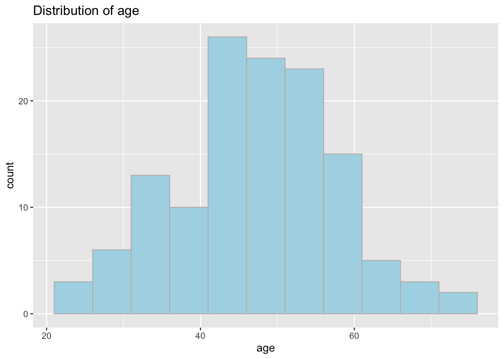
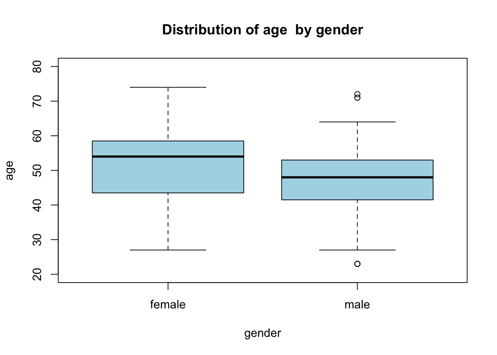
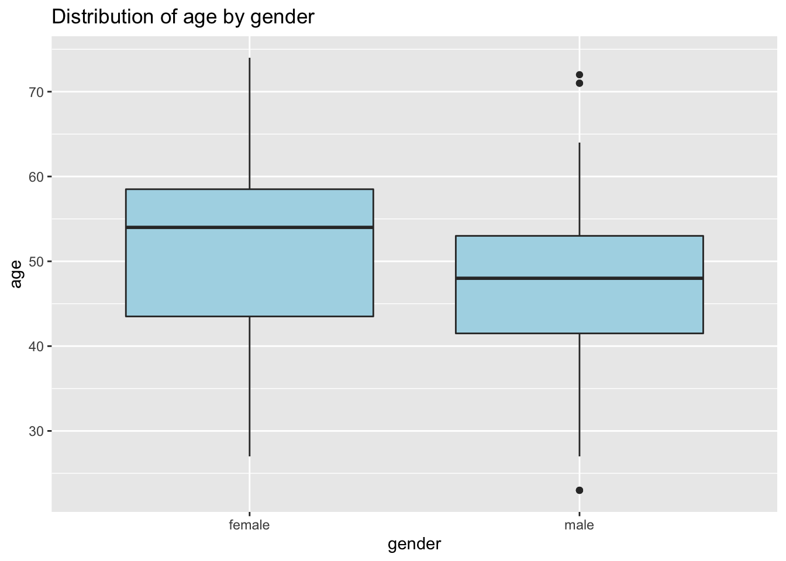
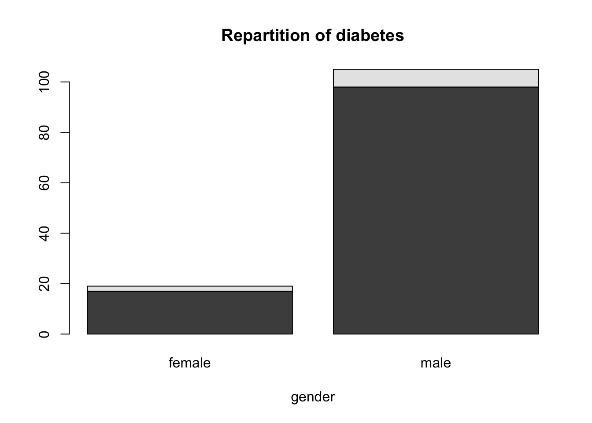
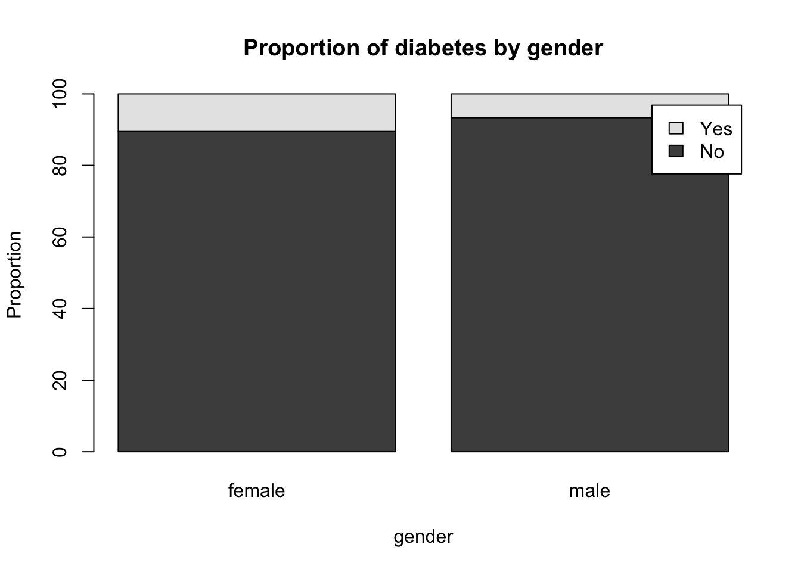
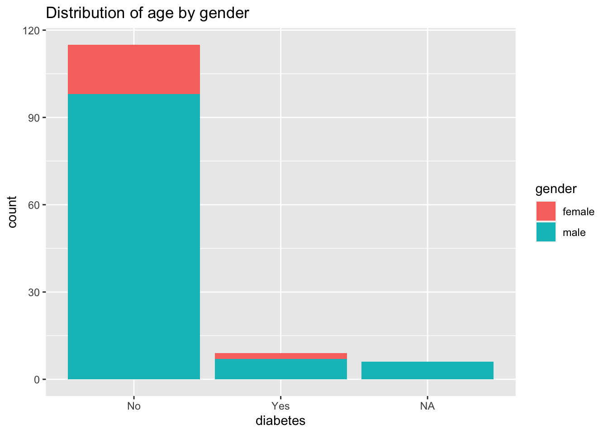

Chapter 5 Plotting
Visualization are often of great help to explore and summarize your data. The plots should be chosen wisely and according to your data type (i.e. continuous, categorical). Stata presents rather basic graphical functions but R possess extensive libraries for a wide range of visual displays going from the basic we will cover here to some geomatic representations (ex library mapsf). A quick introduction to the ggplot2 library (or grammar for graphic) is done here too but for more ressources see https://ggplot2.tidyverse.org/
5.1 Quantitative data
For one quantitative continuous variable, the histogram is the plot to use to visualize the global trend of the data. However you need to be aware that most statistical software optimize the bin width to display the values per intervals but you may change it and you may seen that it change the visual and possibly your interpretation.
R
In R, you can specific the number of breaks
hist(sleep$age)Figure 5.1: Distribution of age (in years)
A more advanced graph with ggplot2 library, where aes() is the aesthetics or the dimensions along with you plot the data and the geom*_(), the geometry you give to the plot. You may have noticed that the using ggplot is more like writing a sentence with + sign to delimit the instructions.
library(ggplot2)
ggplot(sleep, aes(age)) +
geom_histogram(binwidth = 5, boundary=TRUE,
col="grey", fill="lightblue") +
ggtitle("Distribution of age")
For one quantitative continuous variable group by a categorical value, the Boxplot is especially useful for comparison.
R
With R the syntax is:
boxplot(age ~ gender , data=sleep,
main="Distribution of age \ by gender",
xlab="gender",
col="lightblue")
Note: the ~ sign that is the symbol for the formula type syntax of Y function of X. You will see again that notation when performing statistical test and regression modeling.
With ggplot2 you could do
ggplot(sleep, aes(y=age, x=gender)) +
geom_boxplot(fill="lightblue") +
ggtitle("Distribution of age by gender")
When looking for (linear) relationship between two quantitative continuous variable, you want to do a scatterplot.
5.2 Qualitative data (categorical)
For one categorical variable by group or not you should use a barplot.
R
db2gender <- table(sleep$diabetes, sleep$gender)
db2gender_pr <- round(prop.table(db2gender,margin=2)*100,2)
barplot(db2gender,
main="Repartition of diabetes",
xlab="gender")
barplot(db2gender_pr,
main="Proportion of diabetes by gender",
xlab="gender",
ylab="Proportion",
legend.text = c("No", "Yes"))
With ggplot2 you could do
ggplot(sleep, aes(diabetes, fill=gender)) +
geom_bar() +
ggtitle("Distribution of age by gender")